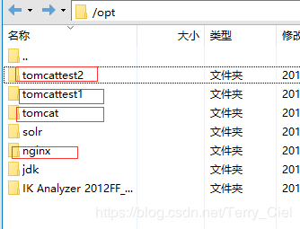
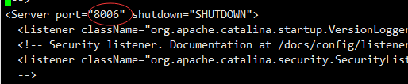
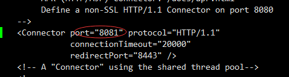
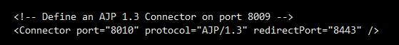

在配置nginx负载均衡前.我们需要明白几个名词的概念
注: 如果不小心忘了tomcat和nginx的启动,关闭命令,可参考写在文章最后的命令
1 什么是nginx呢?
Nginx是一个web服务器和反向代理服务器，用于HTTP、HTTPS、SMTP、POP3和IMAP协议.
2 什么是反向代理呢?
反向代理隐藏了真实的服务端，当我们请求 www.baidu.com 的时候，就像拨打10086一样，背后可能有成千上万台服务器为我们服务，但具体是哪一台，你不知道，也不需要知道，你只需要知道反向代理服务器是谁就好了，www.baidu.com 就是我们的反向代理服务器，反向代理服务器会帮我们把请求转发到真实的服务器那里去。Nginx就是性能非常好的反向代理服务器，用来做负载均衡。
3 什么是负载均衡呢?
负载均衡（Load Balancing）是一种将任务分派到多个服务端进程的方法。例如，将一个HTTP请求派发到实际的Web服务器中执行的过程就涉及负载均衡的实现。一个HTTP请求到达Web服务器，这中间涉及多个过程，也存在多种不同负载均衡的方法。
4 负载均衡有什么作用呢?
5 负载均衡的分发策略是什么呢?
Nginx 的 upstream目前支持的分配算法：
1)、轮询 ——1：1 轮流处理请求（默认）
每个请求按时间顺序逐一分配到不同的应用服务器，如果应用服务器down掉，自动剔除，剩下的继续轮询。
2)、权重 ——you can you up
通过配置权重，指定轮询几率，权重和访问比率成正比，用于应用服务器性能不均的情况。
3)、ip_哈希算法
每个请求按访问ip的hash结果分配，这样每个访客固定访问一个应用服务器，可以解决session共享的问题。
此次模拟就不在多个机器上配了,我们把三个tomcat都装到一台机器上的不同目录下,分别给他们不同的端口,修改下
他们的首页,模拟一下负载均衡
一个nginx服务器,三个tomcat服务器
nginx的安装我前面有写过,同志们可参考这篇文章
tomcat就更简单了,直接上传解压,就可以在浏览器访问ip使用了,打不开,关闭下防火墙试试
我的安装目录
nginx /opt/nginx/nginx-1.8.0
tomcat /opt/tomcat/apache-tomcat-7.0.57
test1号tomcat /opt/tomcattest1/apache-tomcat-7.0.57
test2号tomcat /opt/tomcattest2/apache-tomcat-7.0.57
我们用tomcat来给test1号和test2号做负载均衡

注意: 修改tomcat的配置文件前,如果启动了tomcat,就关了再修改
vi /opt/tomcattest1/apache-tomcat-7.0.57/conf/server.xml改三个地方,把三个没加注释的端口全部加1
注意: 要改没加注释的,加了注释的改了也没用
8005->8006
8080->8081
8009->8010



cd /opt/tomcattest1/apache-tomcat-7.0.57/webapps/ROOT
vi index.jsp
在<body>标签下加个h1标签作区分
位置:
<body>
<h1>111111111111111111111111111111</h1>在浏览器访问
http://192.168.220.111/8081 用你自己的ip跟上面一样,把要修改的三个端口都加2 就行了
注意: 要改没加注释的,加了注释的改了也没用
8005->8007
8080->8082
8009->8011
浏览器访问
http://192.168.220.111/8082 用你自己的ip注意: 修改nginx的配置文件前,如果启动了nginx,就关了再修改
修改nginx配置文件
vi /usr/local/nginx/conf/nginx.conf
shift+g 跳到最下边,在最后的 } 前加入
upstream tomcatserver1 {
server 192.168.220.111:8081 ;
server 192.168.220.111:8082 ;
}
server {
listen 80;
server_name love.com;
#charset koi8-r;
#access_log logs/host.access.log main;
location / {
proxy_pass http://tomcatserver1;
index index.html index.htm;
}
}
解释一下
一个upstream 对应一个server
当我们在浏览器输入 love.com (自己随便写个喜欢的域名),会先找到location里的 proxy_pass 后面的 http://tomcatserver1,
再找到tomcatserver1对应的相同名字的upstream ,然后进去找代理的ip
此时还需要在本地hosts里加上我们的ip就可以在浏览器访问了
在windows系统下,进入
C:\Windows\System32\drivers\etc 目录下,打开hosts文件,在最下边加上
192.168.220.111 love.com
你自己的ip 和你自己配置的域名然后启动nginx
在浏览器输入 http://192.168.220.111
不停的刷新页面,会发现1号tomcat 和2 号tomcat近乎于交替出现,也就是最开始我们提到的负载均衡的三种分发策略中的轮询,
近乎1:1出现
扩展:
然而在现实开发中,假设我们的多台服务器的性能好坏不一样,我们希望性能较好的1 号服务器多代理点url,就可以进行
权重或hash配置
这里附上几条可能会用到的命令
Tomcat常用命令
启动Tomcat：
进入tomcat目录/bin，然后./startup.sh
停止Tomcat:
进入tomcat目录/bin，然后./shutdown.shNginx 常用命令
注意nginx的配置端口的配置文件在 /usr/local/nginx/conf
并不是在解压目录下
启动nginx
cd usr/local/nginx/sbin/
./nginx
重启nginx
有两种方法
1 先关闭再重启
./nginx -s quit 或者 ./nginx -s stop
./nginx
2 直接重启
./nginx -s reload
检查是否已经安装有nginx及对应目录
find /|grep nginx.conf
查看nginx占用的的端口
ps -ef| grep nginx
需要杀掉的话
kill -9 xx